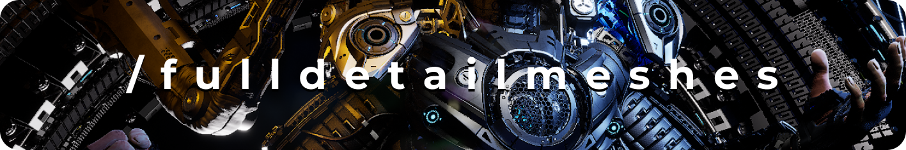
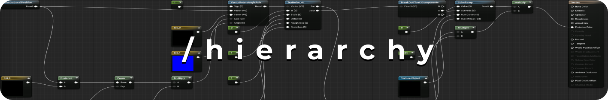
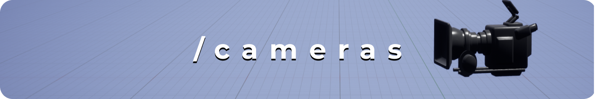
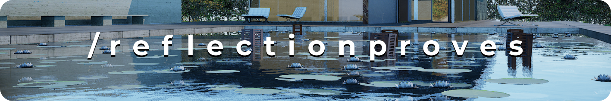
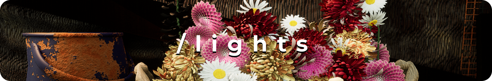

/vertexforge
Export your Blender scene to Unreal Engine using the Datasmith format.
Blender and Unreal have very powerful render engines, but it has always been hard to make them play well together. When Epic created Datasmith it opened many possibilities to transfer complete scenes with an astonishing level of detail.





